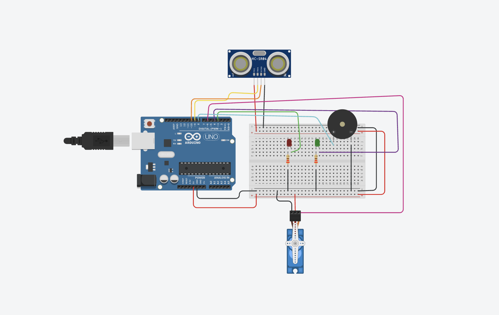

Guía de trabajo
Título de la práctica: Radar
Modalidad: Individual o por equipos
Duración estimada: 4 a 6 sesiones
Verifica que el servo pueda girar libremente entre 15 y 165 grados antes de ejecutar la prueba completa.
Producto final identificado
Construir un radar de detección con Arduino que mueva un sensor ultrasónico mediante un servo y emita alertas visuales y sonoras según la distancia detectada.
Objetivo 1: Investigar cómo localiza objetos un radar
Descripción: Explorar con una actividad sencilla cómo un sensor puede mirar en distintas direcciones. Relacionar la dirección con un ángulo y la cercanía con una distancia.
Entrega: Dibujo de un semicírculo con ángulos de 15, 45, 90, 135 y 165 grados, y tres objetos colocados a distintas distancias.
Evaluación: El dibujo diferencia correctamente dirección y distancia y explica por qué se necesitan ambos datos.
Objetivo 2: Planear el barrido y las alertas
Descripción: Definir el recorrido de ida y vuelta del servo y distinguir tres situaciones: sin objeto cercano, objeto detectado y objeto en alerta.
Entrega: Diagrama de flujo con barrido, medición y respuesta de LED verde, LED rojo y buzzer.
Evaluación: El plan incluye recorrido de ida y regreso, una medición en cada posición y respuestas distintas para detección y alerta.
Objetivo 3: Diseñar la base móvil y el circuito
Descripción: Revisar el diagrama y crear una base que permita al servo girar el sensor sin que los cables detengan el movimiento. Ubicar los LEDs y el buzzer de forma visible.
Entrega: Diagrama etiquetado y boceto superior de la base con el arco de movimiento.
Evaluación: El diseño incluye todos los componentes, respeta los pines y deja libre el recorrido entre 15 y 165 grados.
Objetivo 4: Probar medición y movimiento por separado
Descripción: Medir objetos a tres distancias conocidas con el sensor fijo. Después mover el servo a cinco ángulos definidos sin instalar todavía el sensor sobre la base final.
Entrega: Tabla que compare distancia real y distancia medida, más una lista de los cinco ángulos probados.
Evaluación: Las mediciones son cercanas a las reales y el servo alcanza los ángulos sin vibrar ni golpear la estructura.
Objetivo 5: Construir el barrido con registro serial
Descripción: Montar el sensor sobre el servo, ejecutar el barrido de ida y regreso y enviar al monitor serial el ángulo y la distancia de cada lectura.
Entrega: Enlace de Drive con video del barrido y registro del monitor serial con pares de ángulo y distancia.
Evaluación: El sensor recorre el arco completo, mide después de cada movimiento y muestra ambos datos de forma legible.
Objetivo 6: Integrar las alertas de proximidad
Descripción: Conectar los LEDs y el buzzer. Probar objetos fuera de detección, dentro de detección y dentro de alerta para verificar cada respuesta.
Entrega: Tabla de tres pruebas con distancia, respuesta esperada y respuesta observada.
Evaluación: El LED verde indica zona libre, el LED rojo señala detección y el buzzer distingue la alerta más cercana.
Objetivo 7: Mejorar precisión y continuidad
Descripción: Ajustar la espera después de mover el servo, ordenar los cables y repetir pruebas con objetos en diferentes ángulos. Corregir lecturas inestables o zonas que el sensor no alcanza.
Entrega: Mapa de prueba con al menos cinco posiciones, resultado de detección y una mejora aplicada.
Evaluación: El radar completa tres barridos continuos, detecta objetos en varias posiciones y mantiene libres el servo y el cableado.
Materiales
- 1 Arduino Uno
- 1 sensor ultrasónico HC-SR04
- 1 servomotor SG90 o similar
- 1 LED rojo
- 1 LED verde
- 2 resistencias de 220 ohms
- 1 buzzer pasivo
- Protoboard
- Cables Dupont
- 1 cable USB
- Base móvil para fijar el sensor al servomotor
- Fuente externa regulada de 5 V si el servo lo requiere
Descripción general
El servo mueve el sensor de un lado a otro, simulando un barrido de radar. En cada ángulo se mide la distancia. Si se detecta un objeto cerca, el sistema cambia a alerta mediante LED rojo y buzzer.
Explicación del funcionamiento
El programa recorre ángulos de 15 a 165 grados y después regresa. En cada posición toma una lectura del sensor ultrasónico y la manda al monitor serial junto con el ángulo. La función revisarAlerta decide si enciende el LED verde, el LED rojo o el buzzer.
Espacio para diagrama
Consulta este diagrama como referencia para realizar tu montaje. Los estudiantes no deben subir archivos a esta sección.

Código completo
#include <Servo.h>
// ===== RADAR SIMPLE CON ALERTA + SERVO =====
// -------- Pines --------
const int TRIG = 9;
const int ECHO = 10;
const int LED_ROJO = 3;
const int LED_VERDE = 4;
const int BUZZER = 8;
const int PIN_SERVO = 6;
// -------- Distancias --------
const int DISTANCIA_DETECCION = 30;
const int DISTANCIA_ALERTA = 10;
Servo servoRadar;
// -------- Función medir distancia --------
long medirDistancia() {
digitalWrite(TRIG, LOW);
delayMicroseconds(2);
digitalWrite(TRIG, HIGH);
delayMicroseconds(10);
digitalWrite(TRIG, LOW);
long duracion = pulseIn(ECHO, HIGH, 30000);
if (duracion == 0) return -1;
long distancia = duracion / 58;
return distancia;
}
// -------- Sonidos --------
void sonidoDeteccion() {
tone(BUZZER, 1200);
delay(40);
noTone(BUZZER);
}
void sonidoAlerta() {
tone(BUZZER, 1800);
delay(80);
tone(BUZZER, 1400);
delay(80);
tone(BUZZER, 2200);
delay(80);
noTone(BUZZER);
}
// -------- Revisar alerta --------
void revisarAlerta(long distancia) {
Serial.print("Distancia: ");
Serial.print(distancia);
Serial.println(" cm");
if (distancia > 0 && distancia <= DISTANCIA_ALERTA) {
digitalWrite(LED_ROJO, HIGH);
digitalWrite(LED_VERDE, LOW);
sonidoAlerta();
}
else if (distancia > DISTANCIA_ALERTA &&
distancia <= DISTANCIA_DETECCION) {
digitalWrite(LED_ROJO, HIGH);
digitalWrite(LED_VERDE, LOW);
sonidoDeteccion();
}
else {
digitalWrite(LED_ROJO, LOW);
digitalWrite(LED_VERDE, HIGH);
noTone(BUZZER);
}
}
void setup() {
pinMode(TRIG, OUTPUT);
pinMode(ECHO, INPUT);
pinMode(LED_ROJO, OUTPUT);
pinMode(LED_VERDE, OUTPUT);
pinMode(BUZZER, OUTPUT);
servoRadar.attach(PIN_SERVO);
Serial.begin(9600);
}
void loop() {
for (int angulo = 15; angulo <= 165; angulo += 5) {
servoRadar.write(angulo);
delay(120);
long distancia = medirDistancia();
Serial.print("Angulo: ");
Serial.print(angulo);
Serial.print(" | ");
revisarAlerta(distancia);
}
for (int angulo = 165; angulo >= 15; angulo -= 5) {
servoRadar.write(angulo);
delay(120);
long distancia = medirDistancia();
Serial.print("Angulo: ");
Serial.print(angulo);
Serial.print(" | ");
revisarAlerta(distancia);
}
}Producto final
Descripción: Radar con sensor ultrasónico montado en un servo, LEDs y buzzer que barre un área, mide distancia y genera alertas de proximidad.
Entrega:
- Enlace de Tinkercad del circuito y código, si se realizó en simulador.
- Enlace de Drive con video del barrido del servo.
- Documento o video en Drive que muestre el monitor serial con ángulo y distancia.
- Los enlaces deben permitir acceso a cualquier persona que los tenga.
Evaluación: El servo realiza el barrido de ida y vuelta, el sensor registra ángulo y distancia, los LEDs y el buzzer responden a los rangos definidos y el sistema funciona de manera continua.
Preguntas de reflexión
Enviar proyecto
Antes de enviar, verifica que los siete objetivos estén completos y que al menos un enlace de Tinkercad o Drive funcione sin solicitar permiso.
Inicia sesión con Google para habilitar el envío.